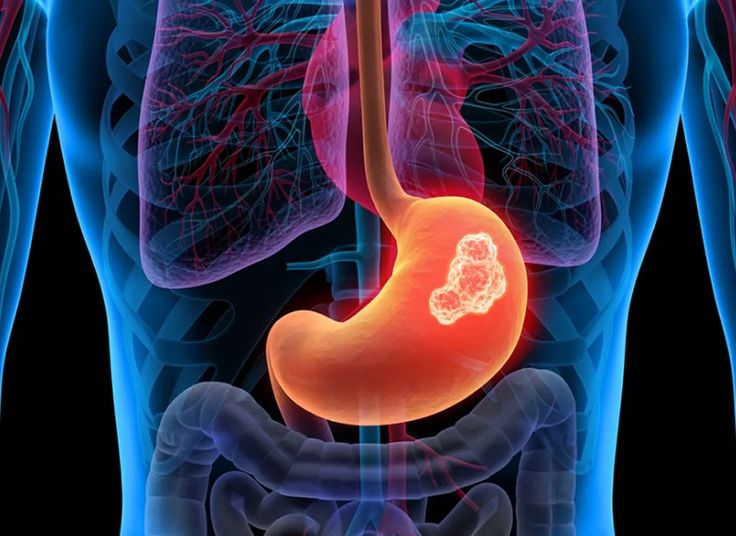

The stomach is a muscular organ that stores food and helps digest it using powerful acids and digestive enzymes before passing it to the small intestine.
⬅ Back to AnatomyLocated in the upper left side of the abdomen, below the diaphragm.
Stores food, mixes it with digestive juices, and begins the digestion process.
The stomach produces a new protective lining every few days to prevent damage from its own acid.
Gastritis
Stomach Ulcer
Stomach Cancer